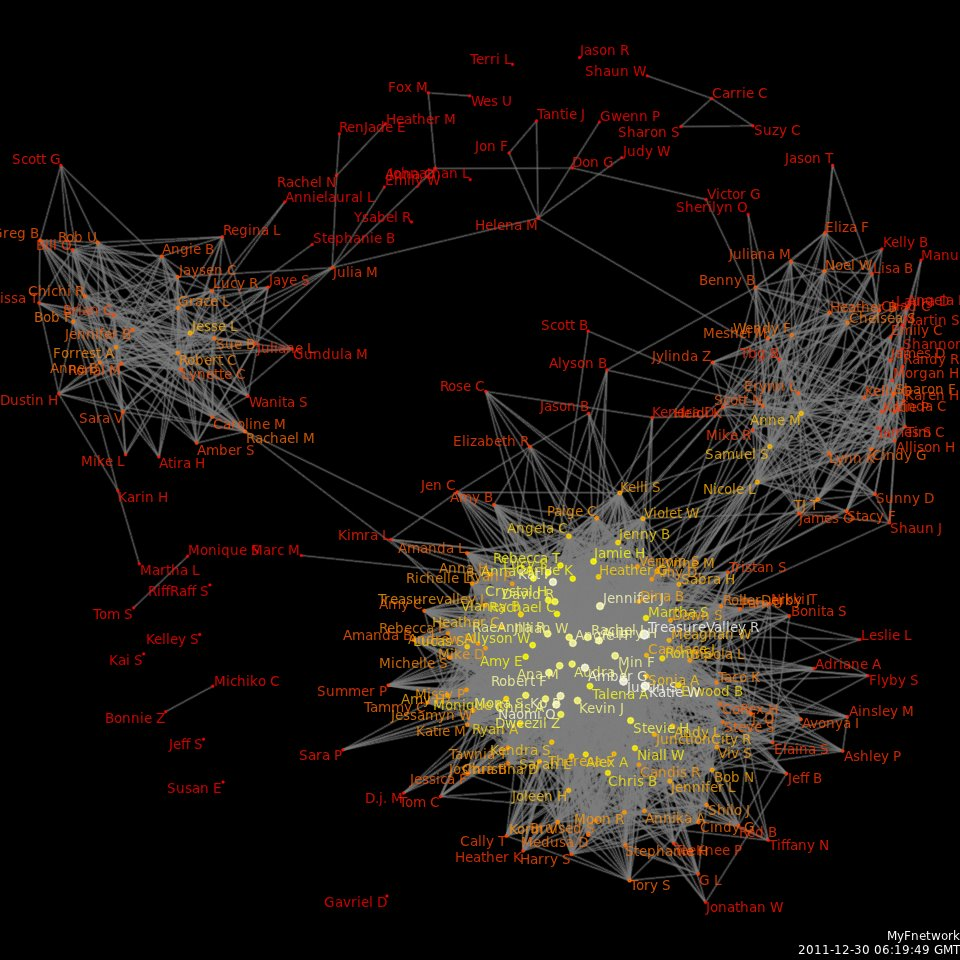

Posted:2/7/16
Author:Eireann
Splinternet
A brief history of the internet, it's political and economic structure and struggles.
Hacking is understanding a system better than it understands itself, and nudging it to do what you want.

Hover over any of the logos to find out more.
When you need up to the minute information about computer security or annual metrics research into accumulation risks.
When you need technical assurance about the trustworthiness and security of a device, or your networks.
When you need to understand and combat particular malware groups or binaries.
When you need training in malicious behaviour on the internet, digital self defense, or speakers for industry conferences.
Concinnity Risks employees like to remain very private. None the less, some of us want you to know who we are.

Éireann Leverett once found 10,000 vulnerable industrial systems on the internet.
He then worked with Computer Emergency Response Teams around the world for cyber risk reduction.
He likes teaching the basics, and learning the obscure.
He continually studies computer science, cryptography, networks, information theory, economics, and magic history.
He is also fascinated by zero knowledge proofs, firmware and malware reverse engineering, and complicated network effects such as Braess' and Jevon's Paradoxes. He has worked in quality assurance on software that runs the electric grid, penetration testing, and academia. He likes long binwalks by the hexdumps with his friends.
Éireann Leverett is a regular speaker at computer security conferences such as FIRST, BlackHat, Defcon, Brucon, Hack.lu, RSA, and CCC; and also a regular speaker at insurance and risk conferences such as Society of Information Risk Analysts, Onshore Energy Conference, International Association of Engineering Insurers, International Risk Governance Council, and the Reinsurance Association of America. He has been featured by the BBC, The Washington Post, The Chicago Tribune, The Register, The Christian Science Monitor, Popular Mechanics, and Wired magazine.
He also serves in an advisory role to ENISA: on the industrial control systems and smart grid security experts group.
He was part of a multidisciplinary team that built the first cyber risk models for insurance with Cambridge University Centre for Risk Studies and RMS.
What our clients have to say about our work.